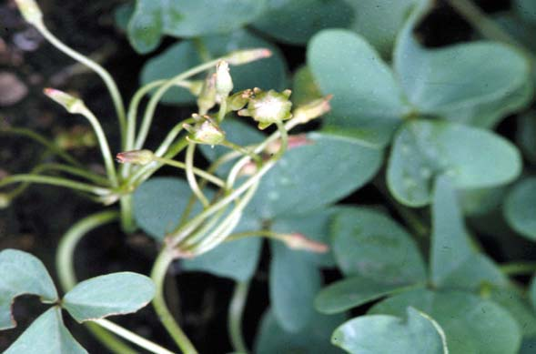
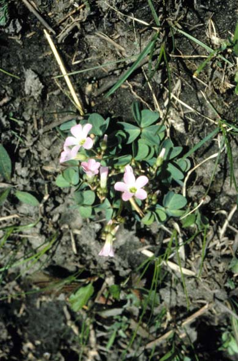
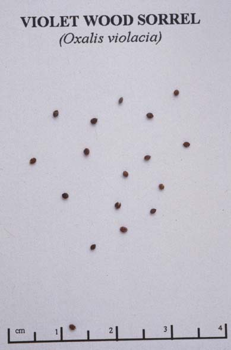

Oxalis Violacea
Family: Oxalidaceae
Violet Wood Sorrel
Swink/Wilhelm #9


Click to view larger photo
FLOWERING: April - Early June
SEED TIMING: Mid - Late July
HABITAT: Dry Prairie and open savanna
DIAGNOSTIC FEATURES: 4 to 8 inches high. Leaves palmately divided, 3 leaflets, inversely heart-shaped, reddish or purple beneath. Several rose-purple flowers on each stalk, rising above leaves.
TO PICK: Seed capsules hang down to develop. When they turn a lighter color and turn up, nip off stem below capsule. Don't squeeze seed heads for they might spring open. Place in deep, open brown bag and allow to disperse.